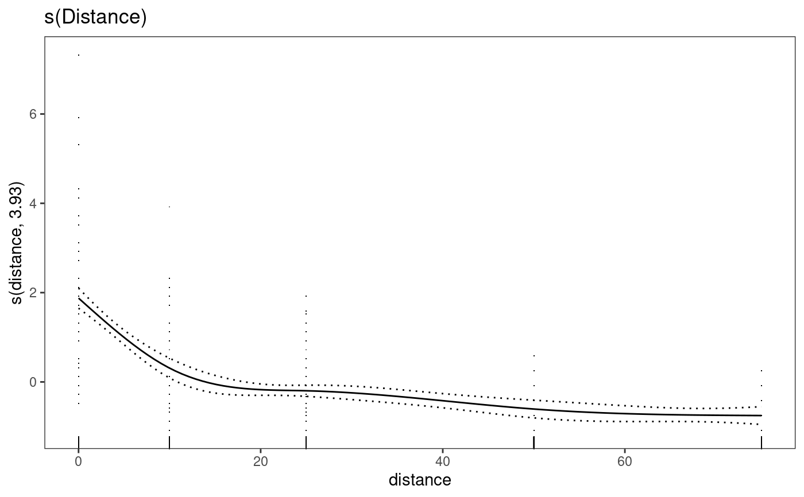

Generic function to print GAMs using mgcViz
p_gam(x)a GAM object created by gam
a `ggplot2` graph object of the GAM
# load necessary libraries
library("tidyverse")
#> ── Attaching core tidyverse packages ──────────────────────── tidyverse 2.0.0 ──
#> ✔ dplyr 1.1.4 ✔ readr 2.1.5
#> ✔ forcats 1.0.0 ✔ stringr 1.5.1
#> ✔ ggplot2 3.5.1 ✔ tibble 3.2.1
#> ✔ lubridate 1.9.3 ✔ tidyr 1.3.1
#> ✔ purrr 1.0.2
#> ── Conflicts ────────────────────────────────────────── tidyverse_conflicts() ──
#> ✖ dplyr::filter() masks stats::filter()
#> ✖ dplyr::lag() masks stats::lag()
#> ℹ Use the conflicted package (<http://conflicted.r-lib.org/>) to force all conflicts to become errors
library("mgcv")
#> Loading required package: nlme
#>
#> Attaching package: ‘nlme’
#> The following object is masked from ‘package:dplyr’:
#>
#> collapse
#> This is mgcv 1.9-1. For overview type 'help("mgcv-package")'.
library("mgcViz")
#> Loading required package: qgam
#> Registered S3 method overwritten by 'GGally':
#> method from
#> +.gg ggplot2
#> Registered S3 method overwritten by 'mgcViz':
#> method from
#> +.gg GGally
#>
#> Attaching package: ‘mgcViz’
#> The following objects are masked from ‘package:stats’:
#>
#> qqline, qqnorm, qqplot
library("ChickpeaAscoDispersal")
# these data are automatically loaded
dat <- left_join(lesion_counts, summary_weather, by = c("site", "rep"))
mod1 <- gam(
m_lesions ~ s(distance, k = 5),
data = dat
)
print(p_gam(x = getViz(mod1)) +
ggtitle("s(Distance)"),
pages = 1)
